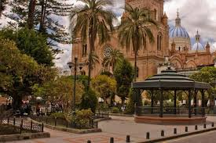
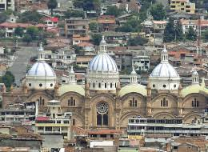

Sitios Geografico
Sitios Geográficos de Cuenca, Ecuador
Ríos de Cuenca
| Nombre del Río |
Descripción |
Longitud (km) |
| Río Tomebamba |
Atraviesa la ciudad de Cuenca y divide la parte antigua de la moderna. |
44 |
| Río Yanuncay |
Uno de los cuatro ríos principales de Cuenca, conocido por sus zonas recreativas. |
25 |
| Río Tarqui |
Río que pasa por la zona sur de Cuenca. |
16 |
| Río Machángara |
Río que contribuye a la cuenca hidrográfica de la ciudad. |
40 |
Montañas y Colinas
| Nombre |
Descripción |
Altura (msnm) |
| Cerro El Cajas |
Parte del Parque Nacional Cajas, conocido por sus lagunas y biodiversidad. |
4450 |
| Cerro Cullca |
Ofrece una vista panorámica de la ciudad de Cuenca. |
3100 |
| Cerro Cabogana |
Ubicado al norte de la ciudad, conocido por su vegetación. |
2850 |
Parques y Áreas Verdes
| Nombre del Parque |
Descripción |
Área (hectáreas) |
| Parque Calderón |
Parque central de Cuenca, rodeado por edificios históricos. |
1 |
| Parque de la Madre |
Parque familiar con áreas de recreación y un planetario. |
2.5 |
| Parque El Paraíso |
El parque más grande de Cuenca, con lagunas y zonas de picnic. |
30 |

Geografía de Cuenca, Ecuador
Ubicación y Extensión:
Cuenca está situada en el sur de Ecuador, en la provincia de Azuay, a una altitud de aproximadamente 2,500 metros sobre el nivel del mar. La ciudad se encuentra en el valle del río Cuenca, rodeada de montañas y colinas que forman parte de la cordillera de los Andes. Su ubicación estratégica la convierte en un punto de conexión entre la Sierra y la Costa del país.
Clima:
Cuenca tiene un clima templado de montaña, caracterizado por temperaturas moderadas durante todo el año. Las temperaturas oscilan entre 10 °C y 20 °C, con una mayor precipitación durante la temporada de lluvias, que generalmente va de diciembre a marzo. La ciudad disfruta de días soleados, pero también experimenta neblina y lluvias intermitentes.
Hidrografía:
La ciudad se asienta sobre la cuenca del río Cuenca, que es un afluente del río Paute. Este sistema hídrico es fundamental para la agricultura y el abastecimiento de agua de la región. Diversos ríos y quebradas, como el río Tomebamba, atraviesan la ciudad y sus alrededores, contribuyendo a la rica biodiversidad de la zona.
Geografía Física:
Cuenca se caracteriza por su topografía variada, que incluye._
Montañas y Colinas: Alrededor de la ciudad, se encuentran numerosas montañas, como el Cajas, que forma parte del Parque Nacional Cajas y es conocido por su belleza natural y ecosistemas diversos.
Valles: La ciudad está situada en un valle interandino, lo que favorece la agricultura y el asentamiento humano.
Zonas Rurales y Urbanas: La geografía de Cuenca incluye áreas urbanas densamente pobladas y zonas rurales que rodean la ciudad, donde predominan actividades agrícolas.
Uso del Suelo:
El uso del suelo en Cuenca se divide principalmente entre áreas urbanas y rurales. La ciudad ha crecido significativamente en las últimas décadas, con una expansión urbana que ha afectado los espacios naturales. Las áreas rurales circundantes son esenciales para la producción agrícola, donde se cultivan productos como maíz, frutas y verduras.
La biodiversidad de Cuenca es notable, con una gran variedad de ecosistemas que albergan diversas especies de flora y fauna. En las montañas y parques cercanos, como el Parque Nacional Cajas, se pueden encontrar especies endémicas y una rica vegetación que incluye bosques de pino, arbustos y páramos.
Riesgos Geográficos:
Cuenca también enfrenta desafíos geográficos, como la vulnerabilidad a deslizamientos de tierra y sismos, debido a su ubicación en una zona de actividad tectónica. La ciudad ha implementado medidas de planificación y prevención para mitigar estos riesgos.
